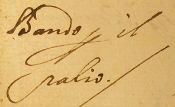

|
- BANDO PER IL PALIO DEL GIUGNO 1664 -
divieto di introdurre armi di qualsiasi sorta, anche smontate |
|

Bando per il Palio Per parte dell’Illustrissimo Signor Capitano di Giustizia della Città e Stato di Siena per Sua Altezza Serenessima d’ordine e Comandamento della medesima Altezza Serenissima invigilando alla quiete publica di questa città apresentendo1 che in occasione del Palio che si deve correre martedì prossimo o altro più vero giorno intorno alla Piazza dalle Contrade della città si voglia far la comparsa delle loro genti armate di bocche da fuoco. Pertanto per rimediare et oviare ad ogni inconveniente che potesse succedere, fa per presente publico bando intendere, notificare e prohibire a ciascuna persona di qualsivoglia stato, grado e conditione che non ardisca a qualcuna tanto da per sé che in compagnia d’altri e sotto qualsivoglia altro pretesto o qualche colore2 portare o far portare arme da fuoco di qualsivoglia sorta, ancor che scomposte3 e non atte ad offendere con comminatione che oltre alle pene imposte per la delatione di simil arme saranno anco puniti e gastigati ad arbitrio di Sua Altezza Serenissima et per acciò alcuno non ne possa pretendere ignorantia. Dato in questo Palazzo di Giustizia questo dì 2 Giugno [1]664 |